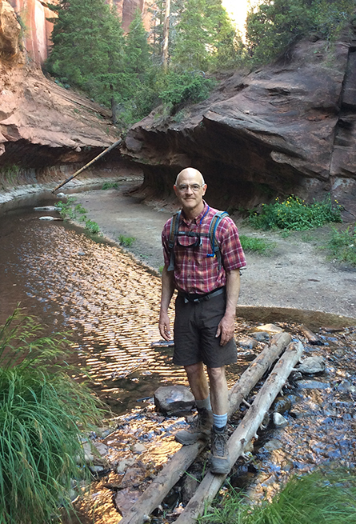

About
Bill
Heavey

Writing for magazines and newspapers for more than twenty years, including two decades at Field & Stream, Bill Heavey has become famous as America’s everyman outdoorsman,


Writing for magazines and newspapers for more than twenty years, including two decades at Field & Stream, Bill Heavey has become famous as America’s everyman outdoorsman,